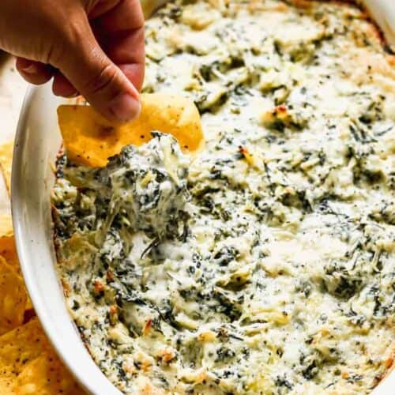

Spinach Artichoke Dip

Ingredients
This EASY Spinach Artichoke Dip recipe is warm, cheesy, and DELICIOUS! It can be made up to 2 days ahead of time, and is always a crowd pleaser!
- 14 ounce can artichoke hearts , drained and chopped
- ½ cup sour cream
- 1/2 cup mayonnaise
- 8 ounces cream cheese , room temperature
- 1 cup freshly grated parmesan cheese , loosely measured
- 1 clove garlic minced
- 1/2 cup spinach , frozen, thawed and liquid squeezed out
Steps
- Preheat oven to 350 degrees F.
- To a mixing bowl add sour cream, mayo, cream cheese, drained spinach, artichoke hearts, garlic and ¾ cup of parmesan cheese. Combine until smooth.
- Place in a greased baking dish (most pan sizes around 8×8 in or a little smaller will work. You could even use a glass pie dish).
- Sprinkle remaining ¼ cup of parmesan cheese on top.
- Bake in preheated oven for about 20 minutes or until hot and bubbly. Serve warm with crackers or bread.